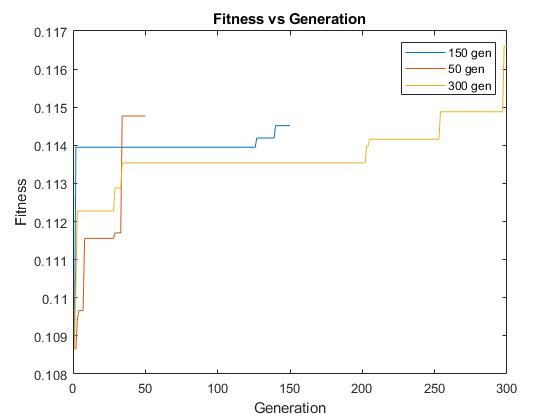
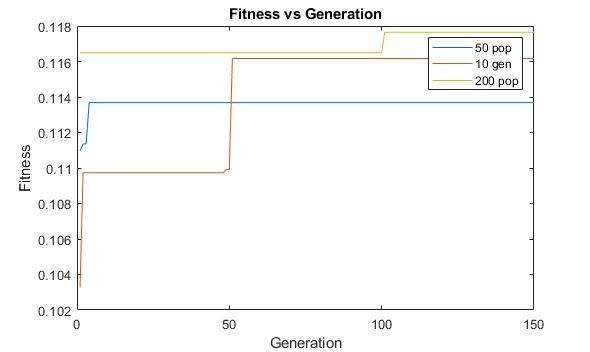
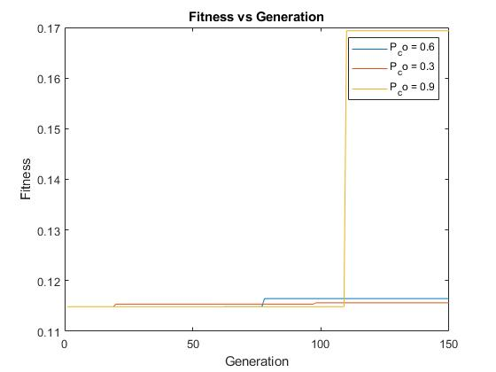
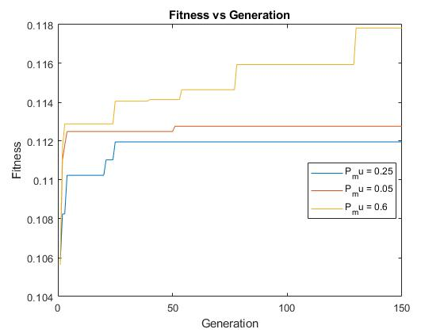

Note that the approach doubled the flows.
The basic TS with no frequency based memory, no aspiration criterion, whole neighbourhood selection, a tabu size/tenure of 10 and a stopping condition of 1000 iterations was run. It's output can be found in q1-part0-output.txt
To generate 10 different initial solutions, the matrixShuffle function was used to scramble the elements inside the default initial solution matrix (figure 1 from the assignment instructions). The output can be found in q1-part1-output.txt
Different starting points resulted in different ending solutions. Intuitively, in a large search space, with a meta heuristic algorithm with low search diversity (such as this case of simple TS without frequency based memory), beginning closer to the optimal solution will likely allow the algorithm to converge and "get stuck" in the global optimum. In fact, one initial condition allowed the tabu search to get the optimal configuration with a doubled-flow cost of 2570 (as mentioned in the assignment instructions):
initialSolution: [
[ 5, 2, 3, 1, 4 ],
[ 6, 8, 9, 10, 7 ],
[ 12, 11, 15, 14, 13 ],
[ 18, 16, 17, 20, 19 ]
]
cost: 2570
solution: [
[ 6, 1, 7, 5, 17 ],
[ 13, 8, 20, 15, 19 ],
[ 16, 11, 12, 2, 4 ],
[ 9, 3, 10, 14, 18 ]
]
A tabu tenure of 3 and 25 were chosen, smaller and larger than the default size of 10, respectively. Note that the default initialSolution was used instead of the best one found in PART 1 since this variable was to be tested independently.
The smaller tabu size converged to the same solution as the default, (cost of 2680) whereas the larger taboo converged to a more optimal solution(lower cost of 2598). The larger tabu size enables a higher level of diversity as it may make a larger subset of a neighborhood taboo, forcing the algorithm to explore worse solutions and escape local optimums. It was found that tabu sizes less than 21 and the default initial solution resulted in being stuck in the cost; 2680 local optimum. The output can be found in q1-part2-output.txt
To increase the dynamic tabu tenure infrequently, a stochastic approach was taken, giving the tenure change a 1% probability of occuring each iteration. At the default stopping condition of 1000, this would mean 10 tenure changes. The integer range for the dynamic tabu was initially chosen to be [1, 21] then [21,50] and finally [1,50]. It was observed in PART 2 that tabu sizes lower than 21 used with the default initial solution resulted in getting trapped in a local optimum. As such, the former dynamic tabu range was chosen to undershoot, overshoot and overlap this inflection point. From the output, there doesn't seem to be a clear correlation between the ranges in and the optimality of the solution. This is likely due to the stochastic nature of the dynamic tabu size. However, it does allow for good diversification. The output can be found in q1-part3-output.txt.
Only setting an aspiration criterion initially was not enough to escape the local optimum near the default initial solution (cost of 2680). As such, the tabu tenure was also adjusted to aforementioned value of 21.
Only the bestSolutionSeen was able to escape the 2680 local optimum. When using the bestSolutionInNeighbourhood, the algorithm was still utilizing the whole neighbourhood selection, i.e. all possible permutations possible were generated. Thus, the most optimal solution in that whole neighborhood would be the same as when no aspiration criterion was used, as such the value expectedly converged to the same 2680 local optimum. The aspiration criterion of bestSolutionInNeighbourhood used in conjuction with whole neighbourhood selection effectively functioned to ignore the tabu list. The output can be found in q1-part4-output.txt.
The less than whole neighbourhood allowed escaping the 2680 local optimum, even without modifying the tabu tenure above 21. This is likely due to the stochastic nature of the neighbourhood generation, as the subset of the whole neighborhood (WN) doesn't necessarily contain the most optimal solution in the WN. This allowed for slight diversification and escape of the the 2680 local optimum.
Using frequency based memory, the local minimum of 2680 however the value still gets stuck at a (better) local optimum of cost 2654. Frequency based memory definitely helped increase solution diversity enabling the escape of the local optimum
Based on the perfFCN.m code provided, it appears that the argument x is a 1x3 matrix; as there are 3 controller parameters to be tuned, K_p, T_i and T_d. For simplicity, a real valued GA representation will be used for each of the 3 controller parameters.
The performance function perfFCN returns four values, ISE, t_r, t_s and M_p.
A possible fitness function could be to simply sum all the values, however if their magnitudes are too different, one performance value could weigh more heavily on the overall fitness. To rectify this, a rudimentary approach was used to iterate through the range of values and determine the minimum performance values. These minimum values can be used to be express each performance as a ratio to their respective minimum so that they can be weighted similarly when they are summed. Although it seems we are brute forcing a solution to the PID controller design, these minimums are the "individual minimums" of each parameter, and thus may not lead to good controller design.
% Minimumus found
ISE: 74.077267208037500
t_r: 0.435735829391950
t_s: 4.260929504825433
M_p: 9.436968709263516
As such, the performance values can be summed as:
SIGMA_P = ISE/74.077267208037500 + t_r/0.435735829391950 + t_s/4.260929504825433 + M_p/9.436968709263516
And the fitness function is:
1/SIGMA_P
The implementation can be found in the file Q2.m. Note that the whole arithmetic crossover and boundary/uniform mutation were used. The implementation of the uniform mutation utilized a range of 80% of the range of each gene. For example, the proportional gain, K_p ranged from [2,18], as such the magnitude for mutation of this K_p gene would be 80% of (18-2) = +/- 12.8.
The plot of fitness vs generation is shown below. Note that the fitness never decreases due to the elitist selection nature.

As shown in the figure below, Increasing the number of generations allows for more opportunities to diversify, as shown by the larger number of "steps" in the 300 generation (yellow line), plot when compared to its counterparts. The 150 gen (blue) surprisingly had a worse ending fitness than the 50 gen (orange), however this is likely attributed to the stochastic nature of the algorithm. Also note how the 150 gen had extremely early convergence near a local optimum, which may have been detrimental to diversification and resulted in poorer performance than the 50 gen.
Larger popultaion sizes result in premature convergence at a higher value. This is likely because a larger initial population increases the likelihood of containing a near optimal solution. This is shown in the figure below, where both the 50 gen (blue) and 200 gen (yellow) find a local optimum with a higher fitness value when compared to the 10 gen (orange). Note that the ending fitness of the 200 gen is the greatest with the 10 gen coming in second. The 50 gen appears to have prematurely converged and gotten stuck at the first local optimum.
In the figure below, it appears that higher crossover probabilities (CP) increase exploration; a 60% CP (blue) had higher exploration and diversity than a 30% CP (orange). The 90% CP (yellow) had a huge spike in terms of diversification at around 110 generations, finding a drastically better fitness value. This is likely because the whole arithmetic crossover results in rather large changes to the chromosomes as it touches each gene. With a high probability of occurence and combined with elitism, this found a solution with the highest fitness value seen so far.
The figure below shows the high mutation probability MP of 60% (yellow) resulted in higher exploration. The 25% MP (blue) also appeared to have higher exploration than the 5% MP (orange) as it had more "steps", indicating movement to a different local optimum. Mutations theoretically increase exploitation because they result in a small change so that the children will stay relatively near the parents. However, as mentioned in PART C, the mutation was up to a range of 80% of the possible values. This may have been too great, and combined with only 3 genes, these mutations may have moved the solution too far from the parent, resulting in exploration instead of mutation.
The simulation was run with each permutation of each of the parameters. The table below summarizes the observations
| Population | Diffusion Rate | Evaporation Rate | Ticks until 0 food | Notes |
|---|---|---|---|---|
| 30 | 40 | 10 | 8940 | last food pile took forever |
| 50 | 40 | 10 | 4210 | ants seem to cluster faster because there's more of them to release phermones |
| 100 | 40 | 10 | 1037 | more clustering, clustering doesn't die down |
| 30 | 80 | 10 | 7855 | I think larger phermone trails / clusters |
| 50 | 80 | 10 | 5210 | Pretty big initial clusters but clusters kept dying out at the last food pile consistently |
| 100 | 80 | 10 | 855 | super fast, huge simultaneous clustering of all 3 piles, no ant was unused high exploitation, exploration |
| 30 | 40 | 20 | 7942 | smaller chemtrails that die down quicker, more exploration |
| 50 | 40 | 20 | 4486 | ^ ditto above |
| 100 | 40 | 20 | 3413 | ^ ditto above |
| 30 | 80 | 20 | 7320 | Food piles being eaten at a similar rate, high exploration, low exploitation |
| 50 | 80 | 20 | 5670 | |
| 100 | 80 | 20 | 2777 |
The population appears to greatly increase the speed at which the ants find food. Both exploration and exploitation are increased with population. This is because there are more agents to search (exploration), as well as more agents to diffuse phermones (exploitation). In the observations, increasing population consistently increases the rate at which food is taken from the piles.
Increasing diffusion rate appears to allow for higher exploitation as there are more phermones being released, thus allowing more ants to cluster around a particular solution. It appears that this typically increases the speed at which food is taken from the piles except for in the population population size of 50 permutations; increasing diffusion rate seems to have the opposite effect for the population 50 case. This may because higher diffusion may be causing lower exploration, making it difficult to find a more distant food pile (i.e. solution).
Increasing evaporation appears to decrease exploitation; intuitively, if the phermones are dissappearing faster, it's less likely to be picked up by another agent. Correspondingly, higher evaporation seems to result in more exploration, many of the food piles were dissapearing at similar rates.
Although not explicitly shown in the table, food/solution placement will play into the other effects and result in different food collection speed. For example, placing all the food piles near each other will favour an algorithm tuned for high exploitation (low evaporation, high diffusion). This is because solutions that are near each other will concentrate the phermones near each other and allow the agents to exploit that region. The converse is true, if the food piles are all placed far from each other, the time taken to find them may increase with a high explotation ant colony because they will take longer to reach distant solutions. In this case, it's likely better to decrease diffusion or increase evaporation to allow higher exploration.